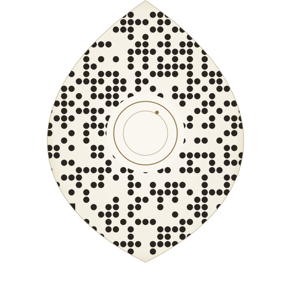
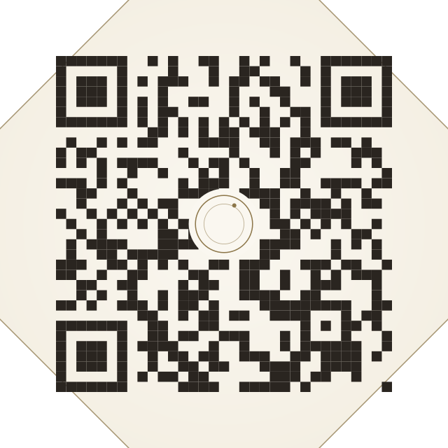
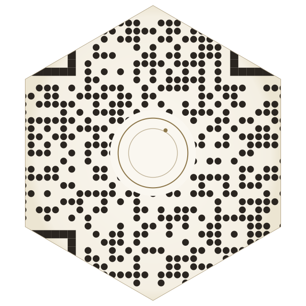

Символ мягкой силы. Асимметрия — острая вершина, округлое основание. Подходит к женственной эстетике клуба.

Благородная форма старой клубной печати — как сургучный оттиск или клеймо на серебре. Строгий, мужской характер.

6 граней — соты, структура мёда, кристаллическая решётка. Современнее ромба, мягче восьмиугольника. Универсальная форма.